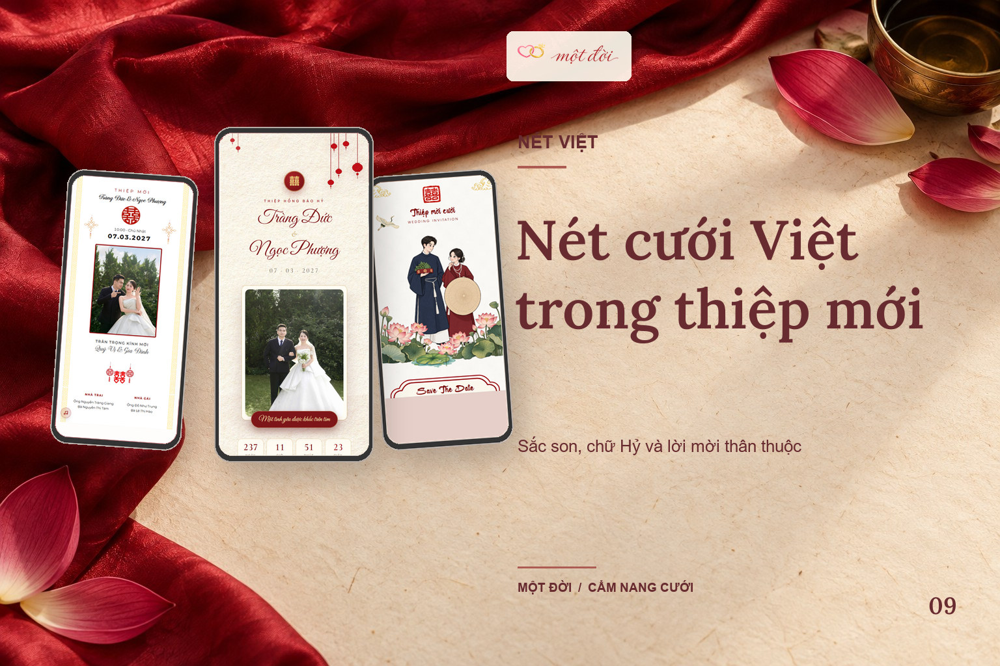

Kinh nghiệm cưới
Thiệp cưới online: 2 điều cần biết về nhạc và ảnh xem trước
Vì sao thiệp tự mở, tự cuộn nhưng nhạc chưa phát? Cách chờ ảnh xem trước tải xong trước khi gửi link qua Zalo, Messenger và lưu ý khi dùng Messenger trên máy tính.

Blog cưới Một Đời
Kinh nghiệm thực tế, checklist chi tiết và cảm hứng từ những cặp đôi Việt — giúp hai bạn chuẩn bị đám cưới nhẹ nhàng hơn.
 Nổi bật
Nổi bậtLộ trình chuẩn bị đám cưới trong 6 tháng với 24 hạng mục, 145 đầu việc, mẹo kiểm soát chi phí và công cụ Wedding Planner theo dõi tiến độ tập trung.
Đọc bài viếtVì sao thiệp tự mở, tự cuộn nhưng nhạc chưa phát? Cách chờ ảnh xem trước tải xong trước khi gửi link qua Zalo, Messenger và lưu ý khi dùng Messenger trên máy tính.

Không cần gõ lại từng ô hay thuê làm thiệp hộ: tải ảnh cưới, chụp thiệp giấy, AI của Một Đời tự đọc thông tin, gợi ý mẫu và xếp ảnh. Bạn chỉ xác nhận những chỗ AI chưa chắc.

Một ảnh cưới đẹp đã đủ để mở đầu thiệp online. So sánh thiệp nhiều ảnh, một ảnh và không ảnh; xem mẫu Một Ảnh 01 và cách tạo thiệp tại Một Đời.

Chưa có ảnh cưới vẫn có thể làm thiệp online chỉn chu. So sánh thiệp nhiều ảnh và thiệp không ảnh, xem hai mẫu Không Ảnh 01, Không Ảnh 02 của Một Đời.

Phân biệt mẫu thiệp cưới tối giản và sang trọng qua bố cục, màu sắc, kiểu chữ, ảnh cưới; cách chọn theo địa điểm và nội dung cần hiển thị.

Những hướng thiết kế thiệp cưới online năm 2026: màu tự nhiên, đỏ truyền thống mới, tạp chí, tối giản giàu ảnh và cách chọn xu hướng không lỗi thời.

Cách tổ chức danh sách, xưng hô, tạo link cá nhân hóa và theo dõi RSVP trên thiệp cưới online mà vẫn bảo vệ dữ liệu của khách mời.
Hướng dẫn chọn ảnh mở đầu, ảnh chân dung, ảnh câu chuyện và album cho thiệp cưới online; cách cắt, nén và kiểm tra trên màn hình điện thoại.

Chọn mẫu thiệp cưới phù hợp với tiệc sân vườn, ballroom, nhà hàng, lễ gia tiên hoặc destination wedding bằng màu sắc, ảnh và mức độ trang trọng.

Cách chọn mẫu thiệp cưới truyền thống online với chữ Hỷ, sắc đỏ, hoa sen; trình bày lễ gia tiên, vu quy và thông tin hai gia đình rõ ràng.

Hướng dẫn thời điểm và cách gửi thiệp cưới online qua Zalo, Messenger cho bạn bè, đồng nghiệp, họ hàng; kèm mẫu lời nhắn và cách theo dõi phản hồi.
Khung tính chi phí thiệp cưới online năm 2026, những khoản dễ phát sinh, cách so sánh với thiệp giấy và các câu hỏi cần hỏi trước khi thanh toán.

Quy trình tạo thiệp cưới online từ chọn mẫu, chuẩn bị nội dung, tối ưu ảnh đến xem trước, xuất bản và gửi link cá nhân hóa cho khách mời.

Checklist dữ liệu cần chốt trước khi làm thiệp cưới online: tên, gia đình, ngày giờ, địa điểm, lời mời, ảnh, lịch trình, RSVP và thông tin liên hệ.

Tìm hiểu thiệp cưới online gồm những phần nào, cách gửi cho khách, ưu nhược điểm và khi nào nên kết hợp với thiệp giấy trong đám cưới Việt Nam.

So sánh thiệp cưới online với thiệp giấy về chi phí, nghi thức, tốc độ gửi, khả năng cập nhật và trải nghiệm của từng nhóm khách mời.
Lộ trình chuẩn bị đám cưới trong 6 tháng với 24 hạng mục, 145 đầu việc, mẹo kiểm soát chi phí và công cụ Wedding Planner theo dõi tiến độ tập trung.